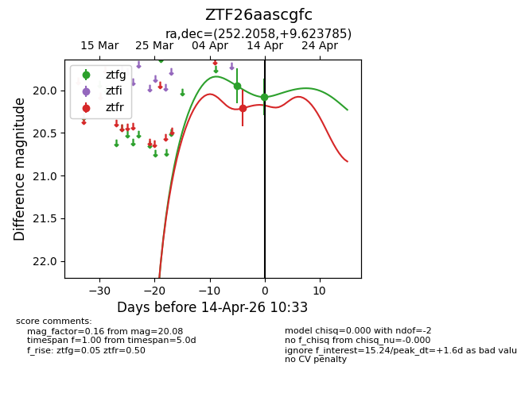
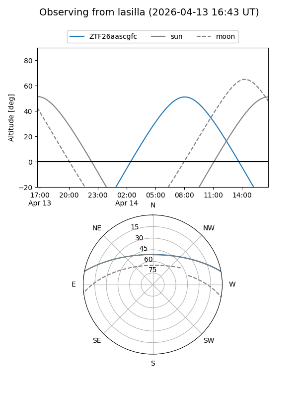
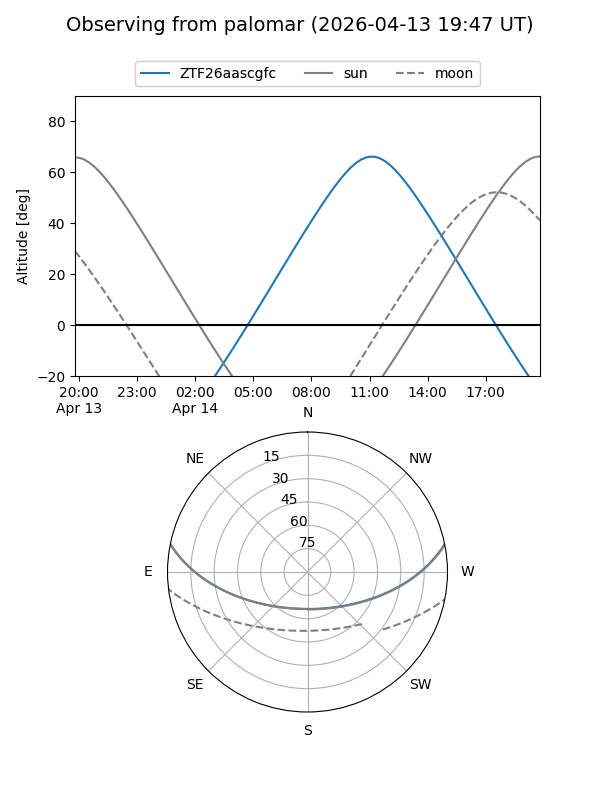
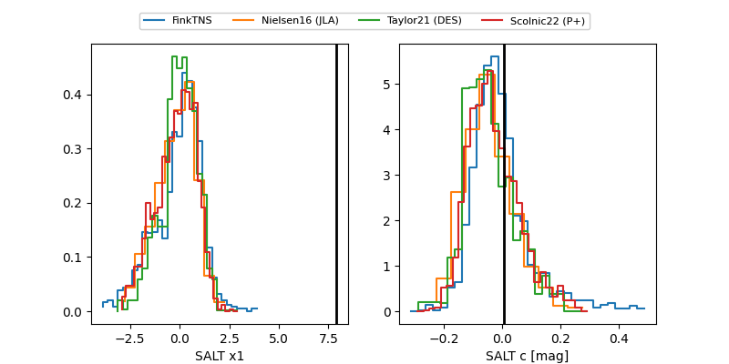

ZTF26aascgfc
Target ZTF26aascgfc at 2026-04-14 10:41
Aliases and brokers:
FINK: link
Lasair: link
ALeRCE: link
alt names
ZTF26aascgfc (ztf,fink_ztf)
Coordinates:
equatorial (ra, dec) = 252.2058,+9.62378
equatorial (HMS+DMS) = 16:48:49.40,+09:37:25.62
galactic (l, b) = (27.5152,+31.57419)
Flags:
Photometry:
last ztfg=20.08, ztfr=20.21
2 ztfg, 1 ztfr detections
Lightcurve

Visibility


Additional plots
